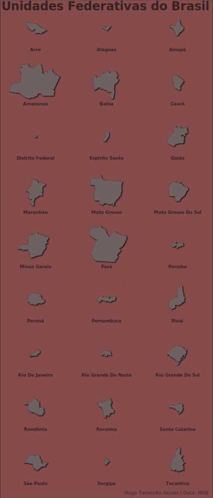

Sou um profissional com mais de 5 anos de experiência com pesquisa e análise de dados. Minhas habilidades incluem:
- Manipulação de dados: limpar e organizar os dados para um estado pronto para análise (incluindo dados espaciais);
- Visualização de dados: figuras de alta qualidade para comunicar resultados (incluindo figuras interativas);
- Análise exploratória: examinar características dos dados para melhorar a compreensão des fenômenos envolvidos com os dados;
- Inferências estatísticas: fazer inferências estatísticas de diversas naturezas, utilizando técnicas modernas de computação;
- Modelagem: desenvolvimento de modelos de predição e classificação;
- Comunicação: Escrever documentos técnicos e científicos em diversos formatos (incluindo relatórios reprodutíveis);
Se você necessita de ajuda com seu trabalho, entre em contato comigo através do meu email.
